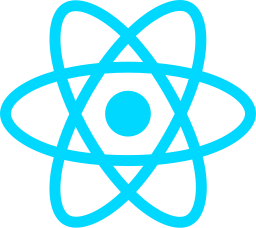
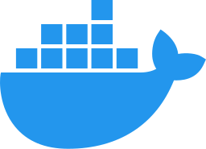
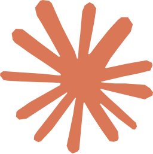

Backtested 5,000+ alphas for Trexquant
Stock-selection signals on 15 years of U.S. equities. 169 qualified, ranking 81st globally.
Graduating in 2027. At Goldman Sachs I took three LLM calls off a production assistant's critical path and cut its latency by 50–60%.
Goldman Sachs, Wadhwani AI, a Springer journal paper and JEE Advanced rank 1287.
Each advisor query waited on three LLM calls before any tool ran. I replaced them with a typeahead that shortlists actions, reranks them and runs a stored template.
Read the Goldman case studyfast-path
No LLM before tools
Running
typeahead
keystrokes to querylivebm25 + prefix + fuzzyrecallcross-encoderrankingmatch a stored chainQueuedrun the tool chainQueuedAI engineer intern: latency and retrieval for an advisor assistant.
Software co-op: an online judge with live code runs, on Docker and AWS.
Research intern: deep learning that segments lecture videos.
Tech consultant: a multi-agent mental-health chatbot.

React and Node.jsAlgoUniversity
Docker on AWS EC2AlgoUniversityStock-selection signals on 15 years of U.S. equities. 169 qualified, ranking 81st globally.
A REINFORCE policy in pure NumPy builds circuits from 36 block types. The best design met all 4 target specs.
A CNN, Bi-LSTM and GCN pipeline timestamps lectures for 1M+ learners with fewer false splits.
For Sukoon: GPT-4 and Claude agents on LangGraph, reviewed by therapists, with 34% more engagement.

Claude agentAt Goldman a ranked lookup replaced three model calls with no loss in accuracy. I start each system by asking which steps can go.
Accepted in the Journal of Computational Neuroscience (Springer). With Prof. Debanjan Das Gupta, I trained a 1D CNN on piriform-cortex spike trains to find what drives odor-frequency selectivity.
250+ attendees across events, taught through games played live.
Find the cell where neither player gains by switching alone.
One of six Heads in a 28-person team, across the 2025–26 year.
As Consulting Group Secretary I organised and mentored both, from CNNs to deployed apps.
The short answers. The résumé has the rest.
In 2027, with a B.Tech in Electrical Engineering and a Minor in CSE (Machine Learning).
Software engineering, AI and ML engineering, and quant research or trading roles.
CPI 8.4 and the Academic Excellence Award 2023–24. All India Rank 1287 in JEE Advanced 2023.
7th at IIT Kanpur and 81st globally in the Trexquant Alpha Challenge, and a Gold certificate at WorldQuant BRAIN.
On GitHub, along with the paper's code and the ML camp projects.